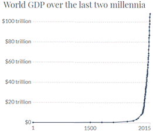

Time to rescue Cuba from what is realy killing it, economic ignorance.
Please download and distribute the easier-to-read double-sided flyer version of this article (pdf, word) Time to educate the economically ignorant haters. Please download and distribute the double-sided flyer version of this article (pdf, word)
LESS MARX, MORE MISES AND HAYEK FOR CUBA
freemarketeers.org

The great intellectual defender and educator of freedom/Capitalism Ludwig von Mises tells us:
“It is ideas that group men into fighting factions, that press the weapons into their hands, and that determine against whom and for whom the weapons shall be used. It is they alone, and not arms, that, in the last analysis, turn the scales.”
We hope that in addition to the moral indignation against Communism that fuels the passion to act, that we also use this opportunity to correct the economic ignorance that has ruined our country and turned brothers into bitter enemies.
HOW CAPITALISM AND THE PRIVATE SECTOR WORKS
The differences between economics systems comes down to who controls resources/property. In Socialism/Communism resources are controlled by the ‘Central Planners’/Experts/Government while in Capitalism it is private citizens. In Capitalism, people’s ‘freedom to trade’ their ‘private property’ with anyone in the entire planet inadvertently transforms mankind into a global supercomputer where people/companies are motivated to innovate and learn from each other(competitors) thus inadvertently cooperate to discover and spread superior information and subsequent order. It is our freedom as consumers to buy the best cars, and as producers to go into the auto manufacturing business, which motivates existing auto manufacturers(competitors) to innovate/compete/learn to produce the best cars lest they not get enough revenue/wealth with which to pay their employees a competitive wage so they use their 'freedom to trade' their labor to join the better-informed and thus more productive/efficient orders/companies. A mind/CPU anywhere in the planet that comes up with an improvement will benefit everyone in the world if they are 'free to trade' for his product/service which will also motivate all competitors in the world to likewise improve their actions/order. Just like in the Olympics we can discover the best athletes in the world due to global competition, so does having the 'freedom to trade' with everyone in the world allows the best ideas to compete/spread globally thus ensuring the best possible global order. Via advertising, competitors are motivated to spread the potential usefulness and superiority of their products/ideas as well as the defects/inferiority of their competitors thus accelerating the need to compete/copy/spread superior information. As cost-cutting ideas emerge and inevitably spread via competition leading relative prices to continuously fall, new profitable ideas easily arise and once again spread via competition in an endless cycle of knowledge generation/innovation. For example, computers were once very expensive, but once the price of making them came down enough, people easily realized that every home could have them, which gave birth to our computerized world and the Internet and all the great things that flow from it. The more wealth is produced, the more wealth has to be offered in exchange for labor as companies/orders compete against each other for the labor they need which helps explain why the economic pie grows for everyone. For example, imagine that after a shipwreck you end up in an island where everyone has a machine that can turn dirt into food. Tom wants your labor to build a home, Mark, to build a boat, and Gina to plant a garden. Competition will motivate them to offer you all the food you want and more.
Morals are ways of acting, they too are knowledge which also emerges and spreads via economic competition to considerable degrees. It is hard-working, tolerant, courteous people who thanks to competition inevitably motivate everyone else to be likewise. As Hayek tells us:
“Competition is, after all, always a process in which a small number makes it necessary for larger numbers to do what they do not like, be it to work harder, to change habits, or to devote a degree of attention, continuous application, or regularity to their work which without competition would not be needed.”
As millions of Italians, Britons, Germans, Cubans and others from all over the world came to America, it was ultimately the competition which grows from ‘private property’ and thus individual liberty/freedom which stripped these people of their otherwise nationalistic/ethnocentric/tribalistic identities and evolved what came to be seen as the classic American character/ethos of wanting to be seen as a reputable/honest businessman/professional who treats everyone with respect and wears a business suit as opposed to older religious/ethnocentric dress.
Thus freedom and emerging 'competitive knowledge discovery', as opposed to leading to chaos, is what enables and motivates the discovery and spread of superior information which continuously increases the rate at which production takes place and civilizes us. Till about the 1800s man’s mythology restricted his freedom via the coercive/restrictive/monopoly plans of his master/King/Church/etc. but as it was seen right/just that he should be free, the resulting ‘competitive knowledge discovery’ skyrocketed and so did production/innovation/prosperity per graph below.
Envision people coming together/apart as companies/orders emerge and dissolve in ever-changing conditions. Superior information arising and rippling/restructuring the social order thanks to competition. As companies get more productive they lure other people to ‘trade-with’/‘join-them’ by offering more money/wealth for their labor, eventually causing the least productive companies/ideas to dissolve as their ‘factors of production’ like labor, buildings, etc. are bid away to be parts of more productive plans/ideas. A swarm intelligence emerges as the freedom of consumers to calculate what is best nourishes the growth and spread or superior orders/companies/information, inadvertently expanding the worldwide “division of labor and information” as entire neighborhoods/cities morph themselves in specialized ways as complementary pieces of information/orders segregate themselves in distinct geographical locations like the software industry in Silicon Valley, California and manufacturing in Guangdong, southern China. As Mises reminds us “The division of labour is a fundamental principle of all forms of life.”
SOCIALISM/COMMUNISM AND THE PUBLIC SECTOR
The role of governments should be to set the framework/laws that maximize such freedom/‘competitive knowledge discovery’ and NOT to attempt to manage/order society because governmental/‘public sector’ bureaucracies, being COERCIVE MONOPOLIES which get their life/order-sustaining wealth through taxes/compulsion are immune to the competitive-information-spreading incentives/pressures which motivate/force private sector entities to keep up with the competition in terms of hustle, and the copying and innovation of ideas. Government information is monopolistic/competition-less information which is always bound to be inferior to private/competitive information. Hayek:
“The argument for liberty is not an argument against organization, which is one of the most powerful tools human reason can employ, but an argument against all exclusive, privileged, monopolistic organization, against the use of coercion to prevent others from doing better.”
Central/government plans can’t work if people are free to not go along with them so they inevitably require compulsion/tyranny. For example, it is a criminal act in Communist countries like North Korea and most of Cuba to start a business, in other words, to attempt a superior restructuring of society because it interferes with the plans of “the experts” who run the government. It is also a criminal act everywhere to not pay taxes that sustain public sector bureaucracies like “public education” so there is little incentive or wealth to sustain other, more desirable/superior competitors/ideas. For example, the NYC public(monopolistic) school bureaucracy consumes about $29,000 per year to “educate” a K-12 student. Refusing to pay a single dollar that goes to this bureaucracy is a criminal act. Taxes and all transfers of wealth from the private sector to the government, besides being an obvious coercive burden to the people that had to sacrifice a part of their lives to earn such wealth and now have less wealth to trade for the things they want, simply destroy the more productive/efficient private sector jobs the taxed-away spending would have sustained and replaces such productive/efficient and pie-increasing jobs for inefficient government/monopoly ones, or worse, like militarism/wars. The former Soviet Union had plenty of highly educated scientists/‘experts’ whose plans required the coercion of millions as still happens in Cuba, but they were thoroughly crushed by free Americans and their ‘competitive knowledge discovery’. Socialist regimes and government in general also face an “incentive problem.” In free societies, or the private sector, each person is incentivized to be as productive and careful as possible and keep inefficiencies/risks to a minimum since he owns/keeps the additional wealth or losses in terms of unprofitable ideas or law suits. On the other hand, the government employee or bureaucrat gets the same pay (ability to then consume) whether his department did a good job (produced a lot) or not, and is also not risking his own wealth since that comes from the taxpayers. In a free/Capitalist society a person is a criminal only if he cheats on a contract or coercively interferes with other’s property, while in a Communist/Socialist society he is a criminal if he does not go along with the coercive/monopoly plans of the “experts”
A government regulation is
competition-less/monopoly information that is forced upon the entire social
order from the top-down via the law. In the free/private/competitive sector
information moves from the bottom (individual minds/entrepreneurs/innovators)
to the top/others/influencers as it is ‘tested’/refined/preferred/adapted by
the comparisons to other information by billions of minds thus ensuring
superior information spreads. This is bypassed by top-down regulation and all
government/monopoly action which ultimately comes at the expense of wiser
private action. The more the government regulates, the more it paralyzes
competitive knowledge discovery. As government regulations have increased in
the health care sector, turning it into a sort of island of paralyzed top-down
competition-less/socialist central planning, so have costs. These increased
costs have led the sector to grow from consuming just 4% of the American
economic pie in 1960 to over 20% in 2021. The
“Science” is just information as well, unfortunately medical science in most of
the world is totally regulated/paralized by government leading to spectacular
failures/tyrannies. Just like the above image and logic easily shows how coercive/monopoly
information leads to economic disaster, CovidMania lockdowns and coerced
vaccinations can easily be seen as Communism-like errors by comparing the
countries that did not lock down to those that did and paralyzed/destroyed
their economies/freedoms. Sweden and US states like Florida, and South Dakota
easily proved that all coercive/monopoly government action has been the
inevitable ineffective disaster that always occurs. Unfortunately, as with
Communism, the economic ignorance of the masses and resulting faith in coercive
monopoloy/“experts” still grips much of the world.
THE IMPOSSIBILITY OF SOCIALISM/COMMUNISM
Communism can’t discover the needed information to order society in a manner that produces more than it consumes so the economic pie continuously shrinks leading to eventual famine/death. For example a restaurant in Miami sells picadillo for $8. Prices in general and thus the $8 price provide vital information. Perhaps $1, might be profit, and $7 will be spent in costs, in other words, in the necessary consumption of wealth needed to produce the meal/wealth, things like the wealth that had to be consumed/used to create equipment/electricity/food/supplies, and everything employees and their families will consume at home (food, energy) thanks to their paychecks that came from the $7/meal. The rising global finance/banking industry, which motivates people with inferior ideas to consume less than they produced and pairing such ‘saved wealth’ with entrepreneurs(borrowers) who would then use it nourish the consumption of workers as they increased the economic pie by an amount greater than prevailing interest rates so they can pay back the loans to savers and still profit thus giving a tremendous computational and productive boots to society, was seen as some useless/malicious gimmick by the always “evil Capitalists”. Socialist fools like Hitler even blamed Jews for it. Just like complex environmental factors create selective pressures that favor the spread of certain genes, the environment was ripe for the emergence of a new religion/mythology, Socialism/Communism/'Coercive Competition-immune Central Planning by Experts'/Statism. The businessman discovered two things that are IMPOSSIBLE for a central planning body to discover regardless of the good intentions of its members or their intelligence, 1) that there are enough customers nearby willing to patronize the restaurant at the $8/meal price thus making their lives better, and 2) how to reorder $7 worth of stuff(labor/supplies/etc.) to profitably produce the meal. If he sets prices too high, customers will choose other superior competing options. If he sets prices too low, he won't be able to cover costs and will go out of business. In other words, if he can't entice consumers to buy at a profitable price, the entrepreneur is failing to reorder the world in a superior way as judged/calculated by customers/CPUs. Therefore, Socialism/Communism can’t work because only free people/businessmen dispersed throughout society are at the right time and place needed to discover people’s desires(1) and (2) how to properly set prices and thus create a profitable and competitive order ( i.e., one that produces more than it consumes while also providing a superior alternative to customers/society). This helps us understand why Cuba had newer buildings and cars and was more productive in 1958 than over 63 years later.
WHY WE REPEATEDLY FALL FOR
SOCIALISM/COMMUNISM?
For most of human evolution man has lived in small communal tribes where things like money, finance/banking, the tradition of private property and resulting ‘competitive knowledge discovery’ did not exist. Jealousy/hatred of those that have more, especially in times of need, and the altruism that motivates us to share are intuitive, while understanding the aforementioned economic concepts is not and requires a tolerance and respect for private property which goes against out tribalistic/communist instincts. As Hayek explains:
"...man’s instincts...were not made for the kinds of surroundings, and for the numbers, in which he now lives. They were adapted to life in the small roving bands or troops in which the human race and its immediate ancestors evolved during the few million years while the biological constitution of homo sapiens was being formed.”
The growing bewildering complexity of modern cities in 1800s led to the viral spread of numerous economic fallacies. For example, competition and advertising were seen as redundant and a way for selfish/greedy businessmen to exploit and enrich themselves at the expense of workers, and monopoly control by doogooder “experts” was seen as superior/fairer. Eventually someone would describe these increasingly popular fallacies/myths in a manner that was bound to go viral and that is what happened with Karl Marx and his bite-sized 'Communist Manifesto':
"the theory of the Communists may be summed up in the single sentence: Abolition of private property"...."Abolition of the family!"
Thus the abolition of ‘competitive knowledge
discovery’ and civilization itself which emerges from the tradition of ‘private
property’.
MISES WILL ONCE AGAIN SAVE CIVILIZATION
Fortunately
for mankind Ludwig von Mises nearly single-handedly put the brakes on Socialist
expansion when he showed the impossibility of central planning via his essay “Economic
Calculation in the Socialist Commonwealth” and persuaded Austrian politicians
away from Communism:
“I knew what was at
stake. Bolshevism would lead Vienna to starvation and terror within a few days.
Plundering hordes would take to the streets and a second blood bath would destroy
what was left of Viennese culture.”.. “The most
important task I undertook…was the forestalling of a Bolshevist takeover… The
fact that events did not lead to such a regime in Vienna was my success and
mine alone.” –Mises (Memoirs)
Later in 1944, Mises’ protégé 1974 Nobel
Laureate in Economics F.A. Hayek would publish ‘The Road to Serfdom’ which
would be read by millions of Americans and educate/inspire future champions of
Capitalism like British Prime Minister Margaret Thatcher and 3
time US Presidential Candidate Ron Paul and countless others.
“If socialists understood economics
they wouldn't be socialists.” - Hayek
“The curious task of economics is to demonstrate to men how
little they really know about what they imagine they can design.” – Hayek
“If we want to avoid the destruction of Western civilization
and the relapse into primitive wretchedness, we must change the mentality of
our fellow citizens. We must make them realize what they owe to the much
vilified "economic freedom," the system of free enterprise and
capitalism...The issues of society's economic organization are every citizen's
business. To master them to the best of one's ability is the duty of everyone.”
– Mises
“forgive them, for they do not know
what they are doing.” – Jesus